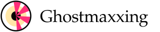
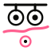

Ghostmaxxing · internal · not linked from the site

The mark is a lens
with something on it.
A camera lens, open and looking. A ghostutter shard landed across it, biased to one side, leaving part of the iris still visible. Not a blindfold — an obstruction. The read is degraded, not prevented, which is the only claim this project actually makes.
01
Anatomy
Four elements, fixed. Everything is drawn on a 64-unit grid centred on 32,32 — the same pivot the animation rotates around. If those two ever disagree the mark wobbles, which is why both come out of one generator.
02
Four variants, and when each is correct
There is no “default” file. Pick by what is behind the mark, not by habit.

| Variant | Use on | Never |
|---|---|---|
| ondark | Ink, soil, green — anything darker than the cream iris. | On orange. The pink loses the ring and the whole thing floats. |
| onlight | Orange, cream, yellow, white. | On ink — the barrel disappears. |
| mono-ink / mono-cream | Single-colour printing, embroidery, laser etch, favicon at ≤16px, and over photography where pink would fight the image. | Anywhere the colour version would work. Mono is a constraint, not a style. |
| mark-small-* | Rendered at 32px or below. Two fat wedges, no pupil, heavier ring. | Above 48px — it looks crude and under-drawn. |
Pink is reserved
--gm-pink appears in exactly two places across the whole
project: inside a camera lens, and in this mark. Its contrast on orange
is 1.09:1, so it can never carry text or sit on --gm-bg
without the cream iris underneath it. Inside the logo it is always on
cream. That is not a coincidence, it is the reason the iris exists.
03
Lockups
The mark alone is the identity. The lockup is the mark plus the wordmark in Newsreader, and you only need it where “Ghostmaxxing” is not already spelled out nearby.

inkscape --export-text-to-path, or open in any vector
editor and convert to paths. Keep the outlined copy separate; do not
overwrite the generated file.
04
Motion
The shard stutters. The barrel, iris and pupil never move — the lens is fixed and something is failing on top of it. Five uneven steps per revolution, two long holds and a burst, then it starts again. It is a machine retrying a read, not a spinner reporting progress.
Three ways to get motion, in order of preference
| <img src="mark-animated-ondark.svg"> | Self-contained. The keyframes live inside the SVG, so it animates as a plain image, a CSS background, or inline. Use this unless you need to change something at runtime. |
| .gm-logo--animated | Inline SVG plus styles/logo.css. Use when the size, colour or duration has to respond to the page. |
| .ghostutter | The lens mark from the ghostutter package — a shard with no lens under it, for sitting on camera icons. Related, not the same object. Do not use it as the logo. |
prefers-reduced-motion: reduce the shard stops but
stays exactly where it is. It carries meaning; removing it would remove
information, and the still mark is the canonical one anyway.
05
Size and clear space

Below 48px switch to mark-small-*. Below 20px use the
rasterised favicon PNGs rather than scaling any SVG — hinting at that
size beats geometry every time.
06
Misuse
Correct variant for the background, square, untouched.
Never stretch. The lens is a circle and a squashed lens is a different object.
Never recolour the shard. Pink is the reserved dazzle colour; a green shard means nothing.
No shadows, glows, gradients or bevels. The whole system is flat.
Never the ondark variant on orange. Use onlight.
Never scale the full mark below 48px. Use mark-small-*.
07
The files, and the one rule about them
Everything in images/logo/ is generated by
scripts-dev/build-logo.py from a single geometry
definition. Do not hand-edit any of it. Change the
constants at the top of the generator and re-run:
python3 scripts-dev/build-logo.py
Hand-editing one variant is how a project ends up with three logo folders that disagree, each of which looked correct on the day it was exported.
| File | What it is for |
|---|---|
| mark-{ondark,onlight,mono-ink,mono-cream}.svg | The mark, 48px and up. |
| mark-small-*.svg | The mark, 24–48px. |
| mark-animated-{ondark,onlight}.svg | Self-contained stutter. |
| lockup-{horizontal,stacked}-*.svg | Mark plus wordmark. |
| favicon-{16,32,48,180,512}.png | Opaque raster, ink background baked in. |
| icon-maskable-512.png | Android adaptive icon, inset to the 80% safe area. |
| ../../apple-touch-icon.png | Site root. 180×180, opaque, square corners. |